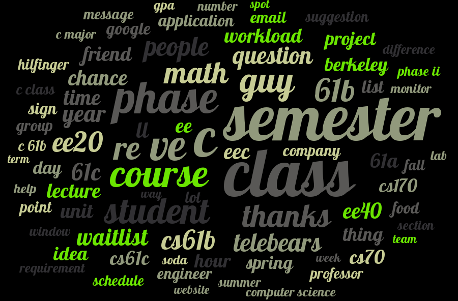
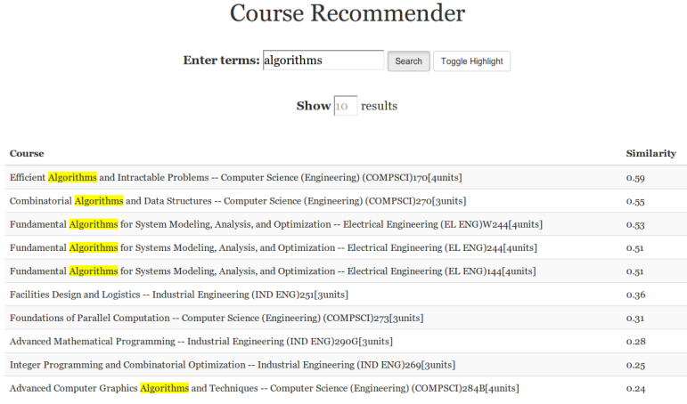
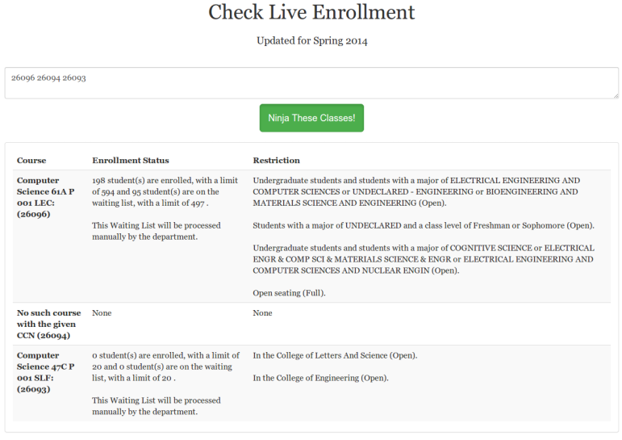
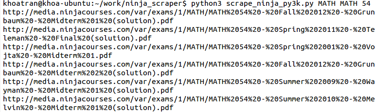
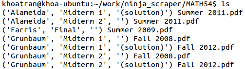
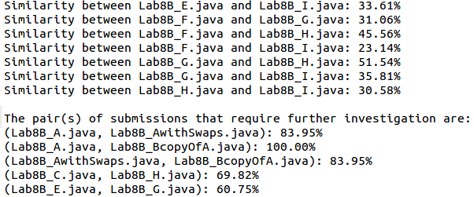

Projects
Recent Projects
- FTES - Facebook Topics Extraction System, which also includes a mini search engine using the bag-of-words model with TFIDF weighting, in IPython Notebook format. My Final Project in i256: Applied Natural Language Processing at UC Berkeley.
Below is a screenshot showing what's "trending" in the Cal Computer Science Group.

- bearRec - A service that allows Berkeley students to search for classes related to topics they are interested in. Built by Golden Bears, for Golden Bears. xD

- bCheck - Retrieve real-time enrollment information for classes at Cal. Gotta beat people to get into classes here. :/

gittalk - A somewhat silly Python package that basically speaks out loud the latest Git commit message via a text-to-speech translator. You know how loud & noisy Hackathons can be if you've been to one. I build this to basically do the shouting to my partners whenever I commit and push something new :p.
Customer Ratings Prediction - A Naive Bayes Classifier which predicts the “star” ratings of customers’ product reviews, trained with a dataset consists of over 150,000 reviews scraped from Amazon.
Recommender System - Built a simple recommender system using a dataset from a retailer startup in a team of five students for the Data Mining class at Cal.
Past Projects
- Ninja Scraper - A scraper that automatically downloaded all past exams for a selected course at Berkeley. It literally saved my butt while studying for final exams in Fall 2012, haha. It's a shame that Ninja Course has removed all of their exam database...
 
Twitter Sentiment Analysis - Pull live tweets and save them to a text file, then performing sentiment analysis on them to determine the most popular hashtags, the happiest US state, etc. My next steps in this project are to use the TwitterStreaming API to pull tweets live without any local storage whatsoever, and use the data for some graphical visualizations.
Plagis - A simple plagiarism detector that checked for similarity among homework submissions in an Introductory Programming class, powered under-the-hood by the Edit Distance algorithm. Advised by Professor Tom Rebold.

- Database Design Project - Relational database management system for Project Juice, a San Francisco-based startup. Here's our web presentation slides. This is my first team project ever, and it was a memorable experience.
Check out my Github page for other projects that I've been working on.